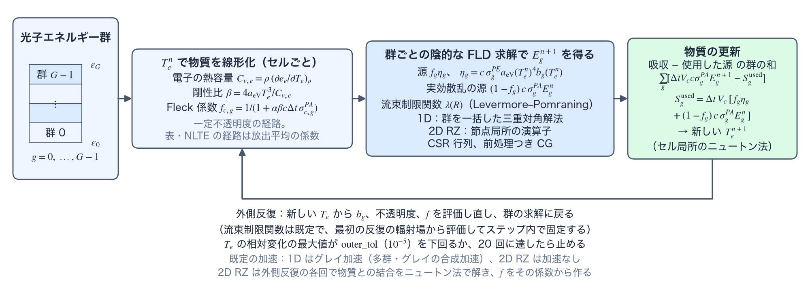
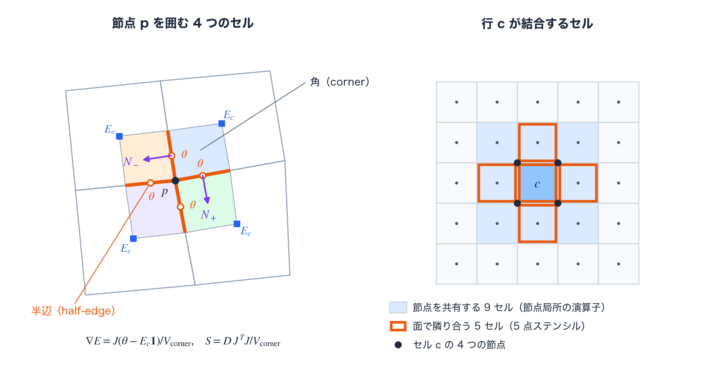

輻射輸送: 多群 FLD reference
TENRYU が実運用で用いる決定論的（deterministic）な輻射ソルバのひとつが、多群の流束制限拡散（multigroup flux-limited diffusion、FLD）である。光子エネルギーを群（group）に分け、Fleck 型の線形化（Fleck linearization）によって電子物質との「硬い（stiff）」放出・吸収を陰的（implicit）に結合し、1D（球・円筒・平面の各測度）または 2D 軸対称 RZ（axisymmetric r–z）の保存型有限体積（conservative finite-volume）の連立系を解く。光学的に厚い（optically thick）領域では拡散極限（diffusion limit）を回復し、流束制限関数（flux limiter）によって薄い領域の流束を抑える。この計算に固有の用語は用語の節で説明する。
物理機構
慣性核融合（inertial confinement fusion、ICF）や高エネルギー密度（high energy density）のプラズマでは、高温の物質が放出した光子が標的の中を横切ってエネルギーを運ぶ。TENRYU が各セルで時間発展させる量は、光子エネルギー群ごとに積分した輻射エネルギー密度 \(E_g\) であり、これを電子の内部エネルギーへ結合する。この交換は計算のなかで最も「硬い」過程 — 固有の時定数が流体の時間刻みよりはるかに短い過程 — になり得る。熱放出が \(T_e^4\) に比例して温度とともに急増し、吸収もメッシュのセル幅よりはるかに短い光子平均自由行程（photon mean free path）で進み得るためである。
光子の平均自由行程 \(1/\sigma_R\) が輻射場の勾配の長さ尺度より短ければ、散乱・再吸収が方向の記憶を消すので角度についての強度はほぼ等方（isotropic）になり、1 次の角度モーメント（流束）はフィックの法則（Fick's law）\(\mathbf F_g=-D_g\nabla E_g\)、\(D_g=c\lambda(R)/\sigma_{R,g}\) で閉じられる。この大小関係が崩れる領域を守るのが Levermore–Pomraning の流束制限関数 [2] である。物理的には、輻射流束は光速でエネルギー密度を運ぶ値 \(cE_g\) を超えられない。制限関数は拡散極限で \(\lambda\to1/3\) を返して通常の拡散を回復し、勾配が急な場所では \(\lambda\) を下げて \(|\mathbf F_g|\le cE_g\) を守る。これにより、輻射流束は拡散から、光速の上限を破らずに自由飛行（free streaming）へ移行する。一方で FLD は角度の情報を保持しない。ビーム、影、方向性のある空隙からの照射には、対になる \(S_N\) ソルバ（離散座標法、discrete ordinates method）を用いる。
1 回の流体ステップのあいだに、ひとつのセルが自身の熱エネルギーを何度も放出・再吸収することがある。剛性比（stiffness ratio）\(\beta=4a_{\rm eV}T_e^3/C_{v,e}\) は、平衡輻射エネルギー密度の温度微分を電子の熱容量で割った量である。\(T_e^4\) の源を陽的（explicit）に扱うと時間刻みが非現実的なほど小さくなるため、TENRYU は Fleck の線形化 [1] \(f=(1+\alpha\beta c\Delta t\,\sigma_a)^{-1}\) を使う。ここで \(\alpha\) は標準的な Fleck 陰的パラメータで、実運用では完全陰的（fully implicit）に相当する 1.0 に固定している。\(f\) の割合をステップ内での新しい熱放出、\(1-f\) の割合をステップ内での実効散乱（effective scattering。散乱に似た再放出）として表す。\(f\) が小さいことは硬い領域であることを示し、この扱いによって群ごとの求解のなかで非線形な物質反復が不要になる。剛性比、Fleck 係数、実効散乱の定義は用語の節にある。
不透明度と放出は光子エネルギーによって何桁も変わり得るため、このモデルは多群である。グレイ平均（gray mean）では、Marshak 波（Marshak wave）[7] の侵入と放出スペクトルの双方を誤って表し得る。係数は LTE（局所熱力学平衡、local thermodynamic equilibrium）、あるいは表・NLTE（非 LTE、non-LTE）の経路から供給できる。もうひとつの実運用輻射ソルバと同じく、FLD は決定論的な静止媒質（static medium）の輸送近似であり、物質運動による \(O(v/c)\) の項のうち、ドップラーシフト（Doppler shift）による群の間の移動、光行差（aberration）、速度に依存する不透明度は含まない（リポジトリの docs/NUMERICS.md §0.5）。輻射圧（radiation pressure）と圧縮仕事（compression work）は、流体との結合として別に入れる。1D では既定の Radiation.multigroup_diffusion.hydro_coupling="gamma_r_43" が、等方輻射圧 \(p_r=\sum_gE_g/3\) を流体の力に加え、その力が各流体の半ステップに節点へ行った仕事を輻射エネルギーから差し引く（群の比は保つ）。"none" は力も仕事も入れず、メッシュが動くあいだ輻射エネルギー密度を固定する。2D RZ では hydro_coupling が "none" に解決され（"gamma_r_43" の明示は設定検証が拒否する）、輻射の力も圧縮仕事も入らない。
群構造と Fleck 線形化
群境界（group bounds）\(\epsilon_0<\epsilon_1<\cdots<\epsilon_G\) に対し、\(E_{c,g}\) はセル c において区間 \([\epsilon_g,\epsilon_{g+1})\) で積分した輻射エネルギー密度である。温度 \(T\) における規格化したプランク分率を \(b_g(T)\) とし、\(\sum_g b_g=1\) とする。したがって平衡状態の初期値は \(E_{c,g}=a_{\rm eV}T^4b_g(T)\)、群の総和は \(a_{\rm eV}T^4\) である。\(a_{\rm eV}=1.3720\times10^{2}\) erg cm⁻³ eV⁻⁴ は eV 単位系で表した輻射定数（radiation constant）である。群境界は eV で与えるが、内部の単位系は TENRYU 全体と同じ cgs + eV のままである。
境界を Radiation.group_bounds_eV="log_uniform" で生成する場合は、compute_T_range_eV \(=[T_{min},T_{max}]\) を光子エネルギーの窓として、\(G\) 個の対数等分（log-uniform）の区間を張る。対数刻みにするのは、プランクスペクトルのピークが \(h\nu\approx2.82\,k_BT\) と温度に比例して桁ごと移動し、不透明度も光子エネルギーで何桁も変わるためである。等比の境界は、想定される全温度域におおむね一定の相対分解能を与える。窓の上端より高エネルギー側の黒体の尾（blackbody tail）は群構造の外になる（規格化された \(b_g\) は総和 1 を保つため保存は壊れない）。したがって範囲には、計算中に現れる最低・最高温度に対して十分な余裕を持たせること。
物質側の応答は、電子の定積熱容量（constant-volume heat capacity）と剛性比
$$ C_{v,e}=\rho\left(\frac{\partial e_e}{\partial T_e}\right)_\rho, \qquad \beta=\frac{4a_{\rm eV}T_e^3}{C_{v,e}} $$から構成する。この物質側の線形化に使う基本量は、FLD と SN が共有する。標準的な Fleck 係数は \(f=(1+\alpha\beta c\Delta t\,\sigma_{a,P})^{-1}\)（\(\alpha\) は Fleck の陰的パラメータで、実運用では 1.0）である。現在の一定不透明度の FLD 経路ではこれを群別に \(f_{c,g}=(1+\alpha\beta_c c\Delta t\,\sigma_{a,c,g})^{-1}\)（この \(\sigma_{a,c,g}\) は下の群拡散方程式の吸収項 \(\sigma^{PA}_{c,g}\) と同じ量である）とし、表・NLTE の経路では放出平均（emission mean）に基づく係数を使う。\(f\) が小さいほど、その時間刻み内での放出と再吸収の硬い部分を実効散乱として線形化し、陽的な温度応答を弱める。FLD と SN は \(f\) に下限を課さず、\(f\) から時間刻みを制限しない（Numerics.dt.f_min_fleck は受理して警告を出し、無視する。時間刻み制御と CFL 参照）。
各群の後退オイラー（backward Euler）有限体積の方程式は、同じ線形化した源を用いて次の形になる（全体の流れは図A）。
$$ \begin{aligned} V_cE^{n+1}_{c,g} &+\Delta t\,c\sigma^{PA}_{c,g}V_cE^{n+1}_{c,g} -\Delta t\sum_{f\in\partial c} A_fD_{f,g}\frac{E^{n+1}_{n(f),g}-E^{n+1}_{c,g}}{d_f} \\ &=V_cE^n_{c,g} +\Delta t\,V_cf_{c,g}\eta_{c,g} +\Delta t\,V_c(1-f_{c,g})c\sigma^{PA}_{c,g}E^n_{c,g}, \end{aligned} $$ $$ \eta_{c,g}=c\sigma^{PE}_{c,g}a_{\rm eV}(T_e^n)^4b_g(T_e^n). $$ここで \(\sigma^{PA}\) はプランク吸収係数（Planck absorption coefficient）、\(\sigma^{PE}\) はプランク放出係数（Planck emission coefficient）で、それぞれ吸収と放出に使う群ごとの係数である。右辺の \(f\eta_g\) が線形化したあとの熱放出、\((1-f)c\sigma^{PA}E_g^n\) が同じ刻み内での実効散乱による再放出を表す。式の面の和は 1D の形である。2D RZ ではこの和を節点局所の演算子に置き換える（流束制限関数と線形ソルバ）。物質との結合の項は、外側反復の節に述べるニュートン反復の形になる。
- \(b_g(T)\) は規格化したプランク分率であり、黒体エネルギーと熱放出のうち群 \(g\) が占める割合である。\(\sum_g b_g=1\) を満たす。
- \(\beta=4a_{\rm eV}T_e^3/C_{v,e}\) は剛性比であり、平衡輻射エネルギー密度の温度微分を電子の体積熱容量で割った量である。
- \(f_{c,g}\) は Fleck 係数である。\((1-f_{c,g})c\sigma^{PA}_{c,g}E^n_{c,g}\) は、刻み内の吸収を新しい熱源としてではなく、実効散乱による再放出として戻す。
- \(\sigma^{PA}_{c,g}\) は除去と沈着に使う吸収係数、\(\sigma^{PE}_{c,g}\) は \(\eta_{c,g}\) を通じて群の放出を決める係数である。LTE の経路では一致するが、NLTE の表では異なり得る。
- \(\sigma_{R,c,g}\) は群内ロスランド平均（Rosseland mean）の長さ不透明度 [1/cm] である。拡散係数と制限関数の引数の分母に使い、平均の取り方が吸収の \(\sigma^{PA}\) と異なる。
- \(D_{f,g}\) は 1D の面 \(f\) 上の拡散係数である。面上に置いた \(E\) と、2 つのセル中心間の光学的厚さをその距離で割った面の \(\sigma_R\)（2 つの半セルの直列抵抗、series resistance）から評価する。係数を面に置く点は Turner と Stone [4] と同じである。共有する面では両側のセルが同じ係数を使う。流束項の \(A_f\) は面の面積、\(d_f\) は面を挟む 2 つのセル中心間の距離、\(n(f)\) は面 \(f\) の向こう側の隣接セルである。
- \(R=|\nabla E_g|/(\sigma_{R,g}E_g)\) は、光子平均自由行程と輻射エネルギーの勾配長の比である。\(R\ll1\) は拡散的な領域、\(R\gg1\) は制限関数が効く自由飛行の極限を表す。

この計算で使う用語
FLD の説明に出る語のうち、この計算に固有の意味で使うものを定義する。物質との交換の線形化（Fleck 係数、剛性比、実効散乱）、外側反復とその加速（グレイ加速、Anderson 混合、流束制限関数の評価）、エネルギー台帳の項目、2D RZ の節点局所の演算子と集約多重格子である。
Fleck 係数、剛性比、実効散乱
剛性比（stiffness ratio）\(\beta\) は、平衡輻射エネルギー密度 \(a_{\rm eV}T_e^4\) の温度微分 \(4a_{\rm eV}T_e^3\)（輻射の体積熱容量）を、電子の体積熱容量 \(C_{v,e}\) で割った量である。\(\beta c\sigma\) は、輻射場を固定したときに物質の温度が平衡へ向かう緩和率である。
Fleck 係数（Fleck factor）は \(f=1/(1+z)\)、\(z=\alpha\beta c\Delta t\,\sigma\) である。\(\sigma\) は吸収係数、\(\alpha\) は Fleck の陰的パラメータで、1.0 に固定している。\(z\) は時間刻みが緩和時間の何倍かを表す。\(0<f\le1\) で、\(z\ll1\) では \(f\to1\)、硬い（\(z\gg1\)）領域では \(f\simeq1/z\) となって 0 に近づく。\(f\) は、時間刻みのうちに吸収した輻射のうち、物質のエネルギーを実際に変える割合である。\(T_e^4\) の放出を線形化することで、群ごとの求解のなかに非線形な物質反復を入れずに放出と吸収を陰的に扱える。
実効散乱（effective scattering）は、吸収のうち残りの \(1-f\) の割合である。この分は物質と正味のエネルギーを交換せず、散乱のように同じセル・同じ群の輻射場へ戻る。方程式では、全吸収 \(c\sigma^{PA}E^{n+1}\) を左辺の除去に入れ、右辺に再放出の源 \((1-f)c\sigma^{PA}E^n\) を加える。局所・無拡散の極限で \(f\to0\) なら \(E^{n+1}=E^n\) となり、この源が輻射エネルギーを増幅することはない。実効散乱は陰的な時間離散の手法であって、物理散乱ではない。FLD は物理散乱をもたず、opacity.kappa_s が 0 より大きい材料は設定検証が拒否する。
数と既定値は次のとおりである。\(\alpha\) は 1.0 に固定され、キーはない。fleck_mode の既定は "fleck_cummings" で、"afi"（almost fully implicit [5]）は Fleck 係数を使わず、外側反復が完全陰的な放出を収束させる（max_outer_iterations を 40 以上にすることを勧める）。fleck_cv_source の既定の "table" は、電子の状態方程式（equation of state、EOS）の表があれば、その表から \(C_{v,e}\) を取り、物質の更新と同じ比熱を使う（表がなければ従来の連鎖）。"legacy" は常に従来の連鎖で、セルの比熱の指定、状態量の比熱、理想気体の比熱の順に使う。fleck_beta（"tangent" が既定、"secant"、"guard"）と fleck_form（"be" が既定で \(f=1/(1+z)\)、"exp_phi1" は \(f=(1-e^{-z})/z\)）は、剛性比と Fleck 係数の作り方を選ぶ。source_integrator="exp_rosenbrock" は Fleck 係数を使わず、物質と輻射の交換を分割して解く。これらのキーはすべて 1D だけが読み、2D RZ では既定以外の値を設定検証が拒否する。
\(f\) は、群ごとの求解の対角と右辺、物質のエネルギー更新に入る。\(f\) が小さい硬い領域でも、陽的な扱いに必要な小さな時間刻みを使わずに済む。2D RZ では、\(f\) を物質との結合を線形化したニュートン反復の係数から作る（外側反復の節）。
外側反復、グレイ加速、Anderson 混合
外側反復（outer iteration）は、電子温度 \(T_e\) に依存する係数（\(b_g\)、不透明度、\(f\)、放出 \(\eta_{c,g}\)）を、群の求解と物質の更新で得た \(T_e\) から評価し直しながら、1 ステップを繰り返し解く反復である。群の連立系が \(T_e\) に依存する係数を必要とし、その \(T_e\) が群の解から決まるので、\(T_e\) について自己無撞着な解を探す反復になる。収束判定は、連続する反復の電子温度の相対変化の最大値が outer_tol（既定 1e-5）を下回ることで、上限は max_outer_iterations（既定 20）である（手順 5、流れは図Aの下の矢印）。
グレイ加速（gray acceleration）は、1D の既定の加速である。グレイ（gray）は、全群を足し合わせた 1 群の量を指す。群は物質を通して結合しているので、素の外側反復の収束は、群の誤差のうち無限媒質（infinite medium）で最も遅く減衰するモードで決まる。そこで群 \(g\) の誤差を、そのモードのスペクトルに比例させて次のようにおく。
$$ e_g=\xi_g\,\varepsilon, \qquad \xi_g\propto\frac{w_g}{1+\Delta t\,c\sigma^{PA}_g}, \qquad \sum_gc\sigma^{PA}_g\,\xi_g=1. $$ここで \(e_g\) は群 \(g\) の輻射エネルギーの誤差、\(\varepsilon\) はその振幅、\(w_g\) は、温度が変わったときの群 \(g\) の源の変化を、物質の熱容量を含む全体の応答で割った割合である。群について足し合わせると、\(\varepsilon\) についての三重対角方程式 1 本（グレイ拡散方程式）になる。その解から、次の反復で使う温度を補正する（Morel–Larsen–Matzen の多群・グレイの合成加速 [8]）。補正は反復間の変化とともに消えるので、収束した解は加速なしの反復の収束解と同じである。キーは outer_accel で、既定の "auto" は 1D で "grey"、2D RZ で "none" に解決する。"grey" は 1D だけで、2D RZ で指定すると設定検証が拒否する。
Anderson 混合（Anderson mixing）は、次の反復に使う線形化温度を、直近の反復の履歴から決める加速である。セルごとの線形化温度のベクトル \(\mathbf u_k\) と、1 回の外側反復（線形化温度から物質更新の出力の温度を返す写像 \(\Phi\)）の残差 \(\mathbf q_k=\Phi(\mathbf u_k)-\mathbf u_k\) を使い、次のように混合する（Walker–Ni の形 [10]）。
$$ \mathbf u_{k+1}=\mathbf u_k+\beta_{\rm A}\mathbf q_k-\sum_{j=1}^{m_k}\gamma_j\left(\Delta\mathbf u_j+\beta_{\rm A}\Delta\mathbf q_j\right). $$\(\Delta\mathbf u_j\) と \(\Delta\mathbf q_j\) は連続する反復の差、\(m_k\le m\) は使う履歴の数、\(\gamma_j\) は、直近の \(m_k\) 個の残差の差についての最小二乗解で、Tikhonov 正則化（Tikhonov regularization）をかけてある。混合は、収束せず次の反復へ進むときだけ行う。収束して抜ける反復の状態は混合しない生の出力なので、受理する解は加速なしと同じ outer_tol を満たす。最小二乗が退化したときは混合せず、混合した温度は温度の床（floor。定義）Te_floor_eV を下回らないようにし、非有限の値のセルは生の出力に戻す。深さ \(m\) は anderson_m（既定 2、1〜4）、減衰 \(\beta_{\rm A}\) は anderson_beta（既定 1.0、0 より大きく 1 以下）で選ぶ。プランク平均不透明度の温度依存が急で \(f(T)\) が急に変わる冷たいセルでは、素の反復が 2 つの値を行き来して収束しないことがあり、その抑制に使う。2D RZ の既定は加速なしで、outer_accel="anderson" は 1D でも 2D RZ でも選べる。
流束制限関数の評価（limiter evaluation）は、制限関数の引数 \(R\) を、どの輻射場から作るかの選択である。limiter_evaluation の既定の "predictor"（予測子）は、最初の外側反復の輻射場（ステップ開始の場で制限関数を評価し、ステップ開始の温度の放出で群を解いた結果）から \(R\) を評価して、ステップのあいだ固定する。このとき外側反復は、物質と輻射の結合だけを収束させる。"iterate" は毎反復の輻射場から評価し直す。この遅れた固定点反復は、光学的に薄く自由飛行が支配的な領域で停滞しやすい。1D と 2D RZ に共通である。
エネルギー台帳の 4 項目
エネルギー台帳（energy ledger）は、輻射と物質のあいだ、および境界を出入りするエネルギーを項目別に記録した帳簿である。FLD は、次の 4 項目をステップごとに作る。単位はすべて erg である。
rad_dep（沈着、deposition）は、物質が輻射場から吸収したエネルギーである。セル・群ごとに、1D では \(\Delta t\,V_c\,c\sigma^{PA}_{c,g}E^{n+1}_{c,g}\) である。rad_emit（放出）は、物質が輻射場へ放出したエネルギーのうち、輻射の方程式の源として実際に使った量である。セル・群ごとに、1D では手順 3 の \(S^{\rm used}_{c,g}\) である。marshak_inは、Marshak の面から領域に入ったエネルギーである。入射流束、面の面積、時間刻みの積を、群について足して面ごとに集める。履歴にはenergy/marshak_in（累積）とenergy/marshak_in_stepが書かれる。escaped（逸出、escape）は、真空の面と Marshak の面から領域の外へ出たエネルギーである。履歴にはenergy/radiation_escapedとして書かれる。
この 4 項目で、輻射と物質を合わせたエネルギーの収支が閉じる。ステップのあいだの輻射エネルギーの変化は、次式に等しい。
$$ \sum_{c,g}V_c\left(E^{n+1}_{c,g}-E^{n}_{c,g}\right) =\sum_{c,g}\left(\mathrm{rad\_emit}-\mathrm{rad\_dep}\right)_{c,g}+\mathrm{marshak\_in}-\mathrm{escaped}. $$体積源（Radiation.volume_source_rate）があるときは、右辺にその入射分（履歴の energy/E_volume_in）を加える。物質のエネルギーの変化は \(\sum(\mathrm{rad\_dep}-\mathrm{rad\_emit})\) なので、輻射と物質の和が変わるのは境界を通る分だけである。内部の面（1D）の寄与は 2 つのセルのあいだで、節点（2D RZ）の寄与は節点を囲むセルのあいだで、厳密に相殺するので、この等式は線形求解の残差と浮動小数点の丸めの範囲で成り立つ。rad_dep と rad_emit は状態の配列で、checkpoint の radiation/rad_dep と radiation/rad_emit に書かれる。2D RZ では、同じ意味の量を最後の解が使った源から作る。
節点局所の演算子と集約多重格子
節点局所の演算子（node-local operator）は、2D RZ の拡散項 \(-\nabla\cdot(D\nabla E)\) を、セル中心の値 \(E_c\) どうしを結ぶ行列に離散化したものである。電子熱伝導（熱伝導の空間離散化）の 2D の演算子と同じ作り方で、導電率を拡散係数 \(D_{c,p,g}\) に置き換える。メッシュの節点 \(p\) ごとに、次の 2 つを定める。
- 角（corner）（図Bの左）は、節点 \(p\) を囲むセル \(c\) の一部で、セルの点（凸なセルでは重心）、\(p\) の前の辺の中点、\(p\)、\(p\) の後の辺の中点を結ぶ四角形である。面積が正でない角は演算子に寄与しない。
- 半辺（half-edge）は、\(p\) から出る辺を中点で分けたうちの \(p\) 側である。RZ では回転体の面になる。各半辺に、未知の輻射エネルギー密度 \(\theta\) を置く。
角の中の勾配をグリーン・ガウスの式（Green–Gauss formula）で作り、角の 2 つの半辺を通る外向き流束を、\(\theta\) とセルの値 \(E_c\) の差の線形関数とする。
$$ \nabla E=\frac{J\,(\boldsymbol\theta-E_c\mathbf 1)}{V_{\rm corner}}, \qquad \mathbf Q=-S\,(\boldsymbol\theta-E_c\mathbf 1), \qquad S=\frac{D\,J^{T}J}{V_{\rm corner}}. $$ここで \(\boldsymbol\theta\) は角の 2 つの半辺の \(\theta\) をならべたベクトル、\(\mathbf 1\) はすべての要素が 1 のベクトル、\(J=[w_-\mathbf N_-,\,w_+\mathbf N_+]\) で \(\mathbf N_\pm\) は半辺の外向き法線に長さを掛けたもの、\(w=2\pi r\)（\(r\) は半辺の中点の半径）、\(V_{\rm corner}=2\pi\int r\,dA\) は角の回転体の体積である。内部の半辺では、両側の角の外向き流束の和を 0 とする（流束の連続）。境界の半辺には、反射の流束 0、真空の \(c/2\) と Marshak の \(c/4\) の伝達係数（外向き流束 = 係数 × \(\theta\)。Marshak では入射流束 \(F_{{\rm inc},g}\) を差し引く）のどれかを課し、状態供給の辺では \(\theta\) を供給の輻射エネルギー密度に保つ。節点の半辺についての連立方程式を解いて \(\theta\) を消去すると、節点のセルの値への寄与 \(a^{(p)}\)（\(k\times k\) の行列、\(k\) は節点を囲むセルの数）が得られる。\(a^{(p)}\) は、行と列の和が 0 の対称半正定値（symmetric positive semidefinite）行列である。全体の行列は節点の寄与の和で、行 \(c\) は \(c\) と節点を共有するセルと結合する。論理的な長方形の格子（logically rectangular lattice）の内部では、自身と隣の 8 セルの 9 要素になる。
面で隣り合う 4 つのセルとだけ結合する 5 点ステンシル（five-point stencil。図Bの右に結合するセルを比べた）と違い、この演算子は、格子の辺が座標軸に沿わないセルや、ブロックを継いだ格子でも、同じ作り方で勾配と流束がそろう。演算子は対称半正定値で、吸収の項を足した行列は対称正定値（symmetric positive definite）なので CG が使える。行と列の和が 0 なので、内部の寄与が相殺してエネルギーが保存する。群ごとのブロックは同じ非零パターン（nonzero pattern）をもち、値は群ごとに違う。
集約多重格子（aggregation multigrid）は、この行列を解く CG の前処理である。対角前処理（diagonal preconditioner。ヤコビ前処理、Jacobi preconditioner）だけの CG の反復数は、拡散が支配する系で格子幅にほぼ反比例して増える。多重格子は、細かい格子では減らしにくい長波長の誤差を、粗い格子の階層で減らす。粗い格子は、セルの集約でつくる。
- 集約は、各ブロックの論理格子で 2×2 のセルを 1 つにまとめ（奇数の最後の行と列は隣の集約に加え）、1 群あたり 64 セル以下になるまで繰り返す。
- 延長（prolongation）は、集約の指示関数 \(P_{\rm tent}\) を \(P=(I-\omega M^{-1}A)P_{\rm tent}\) と平滑化したものである（平滑化集約、smoothed aggregation [11]）。\(M=\mathrm{diag}(A)\) は行列 \(A\) の対角（ヤコビ前処理の行列）、\(\omega=4/(3\Lambda_g)\)、\(\Lambda_g\) は群 \(g\) の \(M^{-1}A\) のゲルシュゴリン（Gershgorin）上界である。
- 粗いレベルの行列は \(A_{l+1}=P_l^{T}A_lP_l\)（ガレルキン積、Galerkin product）で、解くたびに作り直す。
- 平滑子（smoother）は \(M^{-1}A\) の 2 次のチェビシェフ（Chebyshev）多項式（区間 \([\Lambda_g/10,\Lambda_g]\)）で、粗い格子の補正の前後に同じものを掛ける（対称な V サイクル、V-cycle）。
- 最も粗いレベルは、群ごとの密行列のコレスキー（Cholesky）分解から作った逆行列で解く。
すべての群が集約を共有し、係数は群ごとに違う。疎行列（sparse matrix）の積はすべて行ごとに固定順で行い、原子演算（atomic operation）を使わないので、前処理はビット単位で再現する（bitwise reproducible）。リポジトリの docs/NUMERICS.md §6.7.11 に記録された 2026-09-28 の測定（2 温度・4 群・30 ステップ、一定の不透明度 1 cm²/g）では、1 回の解の反復数が、集約多重格子で 29（72×48 セル）と 33（144×96 セル）、対角前処理で 561 と 1145 である。対角前処理は、既定の上限 cg_max_iter（500）を超える。前処理は linear_solver_2d で選ぶ（流束制限関数と線形ソルバ）。
流束制限関数と線形ソルバ
FLD は群ごとに、局所的な無次元の勾配と拡散係数を作る。
$$ R_{c,g}=\frac{|\nabla E_g|_c}{\sigma_{R,c,g}\max(E_{c,g},E_{\rm floor})}, \qquad D_{c,g}=\frac{c\lambda(R_{c,g})}{\sigma_{R,c,g}}, $$ここで \(E_{\rm floor}\) は、無次元の勾配の分母だけを守る小さな正の床である。
$$ \lambda_{\rm LP}(R)=\frac{1}{R}\left(\coth R-\frac{1}{R}\right). $$Levermore–Pomraning 形は \(R\to0\) で \(\lambda\to1/3\) となって拡散極限を回復し、勾配が大きいところでは流束を制限する。1D では面上の \(\sigma_R\) と \(E\) から面の係数を評価する。共有する面では両側のセルが同じ \(A_fD_f/d_f\) を使うため、内部の流束は符号が反転して相殺する。
2D RZ では面の係数を作らず、節点 \(p\) を囲むセル \(c\) の角ごとに \(D_{c,p,g}=c\lambda(R_{c,p,g})/\sigma_{R,c,g}\) を作る。\(R_{c,p,g}=|\nabla E_g|/(\sigma_{R,c,g}\bar E_{p,g})\) の \(\bar E_{p,g}\) は節点を囲むセルの \(E_g\) の算術平均、\(|\nabla E_g|\) は節点を囲むセルの重心を通る最小二乗平面（least-squares plane）の勾配の大きさである（軸上の節点では、軸についての鏡像のセルも当てはめに含める）。当てはめが一意に決まらない節点（境界上で 2 つのセルだけが接する節点など）ではセル中心の並ぶ方向の 1 次元の傾きを使い、セルが 1 つだけの節点ではそのセルの勾配の大きさを使う。一様な場では \(R=0\) となり、各角の係数はそのセルの \(c/(3\sigma_{R,c,g})\) に等しい。
1D では、各群の行列は三重対角になる。GPU 上では群数 \(G\) を一括処理の数、セル数を系の大きさとして、cusparseDgtsv2StridedBatch で全群をまとめて解く。
2D RZ では、節点局所の演算子を群ごとに組み立てる。全群のブロックを行 \(gN_c+c\)（\(N_c\) はセル数）の 1 つの CSR 形式の行列にまとめ、前処理つき CG で解く。2D RZ の FLD は 1 つの MPI（message passing interface）ランクで解く。演算子を作れないメッシュ（多ブロックの接続情報をもたない一般の多角形メッシュ、辺に境界のタグをもたない単一ブロックの格子）では、2D の FLD は実行を止める。
CG の前処理は linear_solver_2d で選ぶ。受理する値は "auto"（既定）、"cusparse_cg_amg"、"cusparse_cg_jacobi"、"jacobi" である。"cusparse_cg_amg" は集約多重格子の前処理で、"cusparse_cg_jacobi" と "jacobi" は対角前処理である。"cusparse_cg_zline"、"cusparse_cg_rgmg"、"amgx_cg" は、以前の 5 点ステンシルの演算子の前処理の名前で、受理して警告を 1 回出し、"cusparse_cg_amg" として扱う。解決は 2 段で行う。設定の検証が "auto" を "cusparse_cg_amg" に解決し、起動時にドライバが格子を多重格子の条件と照合する。条件は、セルが論理格子（\(n_i\times n_j\) セル）のブロックの並びで、ブロックの中のセルどうしの結合がすべて論理格子の隣どうしであることである。満たさない格子では、"auto" と撤去した名前の指定を "cusparse_cg_jacobi" に解決し直して警告を出し、明示した "cusparse_cg_amg" は実行を止める。要求した値と解決した値は、run_info.json と HDF5 の metadata（solver_requested、solver_resolved）に記録される。
面で隣り合う 4 つのセルとだけ結合する 5 点ステンシル（図Bの右）は、格子の辺が座標軸に沿わないセルで、勾配も流束も一致しない。節点局所の演算子は節点を共有するセルすべてと結合し、そのような格子でも同じ作り方で解ける。

外側反復、物質の更新、ボイドセル
手順 1〜5 の式は 1D の実装を述べる。2D RZ の物質と輻射の交換は、外側反復の各回で \((E_g,T_e)\) の完全陰的な後退オイラーの系にニュートン法（Newton's method）を適用する形で解く。物質との結合のヤコビアン（Jacobian）を保ち、拡散係数の温度微分は落とす [9]。TENRYU は不透明度の温度微分も落とす。群が 1 つのときは、Fleck 係数 \(f=C_{v,e}/(C_{v,e}+\Delta t\,\eta')\)（\(\eta'=c\sigma^{PE}\,d(a_{\rm eV}T_e^4b)/dT_e\)）を使う Fleck–Cummings の形になる。群が複数のときは、群どうしが物質を通して、セルごとの吸収率 \(\phi=\sum_gc\sigma^{PA}_g\Delta t\,E_g\) だけで結合することを使い、\(\phi\) のスカラー方程式を GMRES（一般化最小残差法、generalized minimal residual method）で解く。前処理には、Morel–Larsen–Matzen のグレイ拡散方程式 [8] を使う。詳細はリポジトリの docs/NUMERICS.md §6.7 にある。
係数を構築する。 群境界を確定し、規格化した \(b_g(T_e)\) を評価して、\(\sigma^{PA}_{c,g}\)、\(\sigma^{PE}_{c,g}\)、\(\sigma_{R,c,g}\) を埋める。同じ電子 EOS の熱容量から \(\beta_c\) と Fleck 係数を作り、有効な各セル・各群について制限関数の引数と面の拡散係数を作る。Marshak 温度を与える関数はすでに表へ凍結（freeze。定義）されており、評価した値をこの外側反復のあいだ固定する。
全群を組み立てて解く。 1D の行列は三重対角なので、\(G\) 本を
cusparseDgtsv2StridedBatchの 1 回の一括処理として解く。2D RZ では群ごとに節点局所の演算子を組み立て、前処理つき共役勾配法で解く（前処理は、上の節のlinear_solver_2dが選ぶ）。線形反復の収束条件は \(\lVert r_k\rVert\le\texttt{cg_inner_tol}\,N_{\rm ref}\) で、既定はcg_inner_tol=1e-10、参照ノルムはcg_tol_normに応じて、既定の"r0"で \(N_{\rm ref}=\lVert r_0\rVert\)、"rhs"で \(\max(\lVert b\rVert,\mathrm{tiny})\) である（tiny は右辺が 0 のときだけを守る微小な正の定数）。反復の上限はcg_max_iter（既定 500）である。これは粒子の無作為抽出を使わない決定論的な輸送の経路である。2D の前処理が異なっても目標とする \(A^{-1}b\) は同じだが、前処理をまたいでビット単位で同じ反復列になることは保証しない。-
実際に使用した源を保存する。 全群を解いたあとに
$$ S^{\rm used}_{c,g}=\Delta t\,V_c \left[f_{c,g}\eta_{c,g}+(1-f_{c,g})c\sigma^{PA}_{c,g}E^n_{c,g}\right] $$を保存する。物質側のエネルギー台帳の放出側には、新しい温度から評価し直した総プランク源ではなく、この量そのものを使う（1D の実装は、物質の更新の中で同じ形の放出を最終温度で評価し直す。収束した外側反復では \(S^{\rm used}\) に一致する）。
-
物質のエネルギーを更新する。 セル局所のニュートン法により、解いた群の場による吸収と、同じ \(S^{\rm used}\) から電子の内部エネルギーを更新する。
$$ \rho_cV_c\left[e_e(\rho_c,T_e^{n+1})-e_e(\rho_c,T_e^n)\right] =\sum_g\left[\Delta t\,V_c\,c\sigma^{PA}_{c,g}E^{n+1}_{c,g}-S^{\rm used}_{c,g}\right]. $$左辺は、ステップ開始時の温度 \(T_e^n\) を基準にした、ステップ全体でのセルの電子エネルギー変化、右辺は吸収した群エネルギーから実際に適用した放出 — 保存した \(S^{\rm used}\) そのもの — を引いた量である。
外側反復を判定する。 この反復が自己無撞着（self-consistent）にする量 — そして収束判定の対象 — は電子温度 \(T_e\)、いいかえれば \(T_e\) から評価する係数一式である。循環の構造は、群の連立系が \(T_e\) における \(b_g\)・不透明度・\(f\)（および、既定の
limiter_evaluation="predictor"を除き、制限関数を通した拡散係数は現在の \(E_g\) 反復値）を必要とする一方、その \(T_e\) 自身は解いた \(E_g\) を受け取る物質のエネルギー更新から得られる、という点にある。1D では、下に述べる加速を除けば、各反復は緩和（relaxation）なしの純粋なピカール代入（Picard substitution）で、そのステップの開始時の状態から後退オイラーの 1 ステップ全体を解き直す — 右辺は常に \(E^n_g\) に、物質収支は \(T_e^n\) に基づくため、反復は前の結果へ積み増すのではなく置き換える。新しい \(T_e\) から \(b_g\)、不透明度、\(f\)、\(D_g\) を更新して群の求解を繰り返し、連続する反復間の変化が \(\max_c|T^{k+1}_{e,c}-T^{k}_{e,c}|/\max(T^{k+1}_{e,c},T_{\rm floor})<\texttt{outer_tol}\)（\(T_{\rm floor}\) は設定した温度の床Te_floor_eV）を満たしたら停止する。実運用の既定値はouter_tol=1e-5、max_outer_iterations=20である。許容値に達しないまま上限に到達した場合は、1D では最終反復の結果を採用し、頻度を制限した実行ログの警告に未収束の残差を記録する。2D RZ では、ステップの状態を判定する。収束、または倍精度で届く精度に達した（到達精度）ステップは受理し、停滞、上限到達、無効、解の誤差を超える負の輻射エネルギーのいずれかのステップは候補を棄却する。棄却した候補は、全ステップの再試行（定義）ができるとき（
Numerics.hydro.driver_full_step_retry_enabledが有効で、試行の回数が上限Numerics.hydro.driver_full_step_retry_max_attempts（既定 3）に達しておらず、半分にした時間刻みが下限Numerics.dt.min_sを上回るとき）は \(\Delta t/2\) でステップ全体をやり直し、できないときはcap_exit_policy（既定"warn"）が決める。"warn"は候補を使って警告し、"fail"は実行を止める。driver_full_step_retry_enabledの既定は False で、Studio が書き出すデッキは 1D では True を書くが、2D では書かない。1D では既定（
outer_accel="auto"）でグレイ加速を使う。各反復の後、次の反復の温度を、グレイの三重対角方程式 1 本の解で補正する。補正は反復間の変化とともに消えるので、収束した解は加速なしの反復の収束解と同じである。流束制限関数は既定（limiter_evaluation="predictor"）で最初の反復の輻射場から評価してステップ内で固定する（"iterate"は毎反復評価し直す従来の方式で、この遅れた固定点反復は光学的に薄く自由飛行が支配的な領域で停滞しやすい）。GXII（激光 XII 号、GEKKO XII）の 1D 回帰デッキでは全ステップが収束し、外側反復は平均 2.6 回である。2D RZ の既定は加速なしで、任意選択の Anderson 混合（outer_accel="anderson"、1D でも可）もある。境界とエネルギー台帳を閉じる。 上の離散項から
rad_dep\(=\Delta t\,V_c\,c\sigma^{PA}E^{n+1}\) とrad_emit\(=S^{\rm used}\) を作り、同じ境界の行からmarshak_inとescapedを作る（用語の節）。1D では共有する面がひとつの \(A_fD_{f,g}/d_f\) を使い、2D RZ では節点の寄与の行と列の和が 0 になるので、どちらも内部の寄与が相殺し、群について総和した輻射と物質の変化は、浮動小数点の和の範囲で境界のエネルギー台帳へ集約される。ボイドセルを扱う。 ボイド（void）セル（
is_voidの材料のセル。ボイド材料）は、1D ではすべての不透明度モデルで、2D RZ では明示的なボイドのマスクをもつ表・NLTE の経路で、\(f=1\)、\(\sigma^{PA}=\sigma^{PE}=\sigma_R=\eta=0\) とし、物質との交換と温度の更新を行わない。不透明度の床は、拡散係数を有限に保つためだけに使う。これは数値的に安定なボイドの扱いであって、角度に依存する自由飛行のモデルではない。
境界条件とエネルギー収支
反射（reflecting）面では法線方向の流束を 0 にする。真空（vacuum）面には Milne の外向き流束の形 \(F_{{\rm out},g}=cE_g/2\) を使う。Marshak 面は、入射する黒体場と拡散する場を
$$ F_{{\rm out},g}=\frac{c}{4}E_g-F_{{\rm inc},g}, \qquad F_{{\rm inc},g}=\frac{c}{4}a_{\rm eV}T_r^4b_g(T_r) $$のように組む。ここで \(E_g\) は面の値で、真空面は \(F_{{\rm inc},g}=0\) として \(F_{{\rm out},g}=cE_g/2\) を使う。
1D では、この面の値を、外側セルの中心から面までの半セルの拡散流束 \(D_0(E_{0,g}-E_g)/d\) との釣り合いで消去する。結果は \(F_{{\rm out},g}=h_{\rm eff}(E_{0,g}-E_{{\rm inc},g})\)、\(h_{\rm eff}=h/(1+h\,d/D_0)\) となる。\(E_{0,g}\) は外側セルの値、\(h\) は真空面で \(c/2\)、Marshak 面で \(c/4\)、\(E_{{\rm inc},g}\) は真空面で 0、Marshak 面で \(F_{{\rm inc},g}/h\)（駆動の輻射エネルギー密度）、\(D_0\) は外側セル自身の流束制限した拡散係数、\(d\) は外側セルの幅の半分である。行列の対角へ \(\Delta t\,A_{\rm out}h_{\rm eff}\)、右辺へ \(\Delta t\,A_{\rm out}(h_{\rm eff}/h)F_{{\rm inc},g}\) を加える（\(A_{\rm out}\) は外側の面の面積）。外側セルが光学的に薄く \(d/D_0\to0\) であれば \(h_{\rm eff}=h\) となり、Marshak 面では対角へ \(\Delta t\,A_{\rm out}c/4\) を加える形に戻る。光学的に厚いセルでは、面の値が \(E_{{\rm inc},g}\) に保たれる。
真空面の係数 \(cE_g/2\) と Marshak 面の外向きの部分流 \(cE_g/4\) の因子 2 の差は、境界の閉じ方の違いであって矛盾ではない。真空面は P1（拡散）角度クロージャ（closure）の下で入射ゼロを課す Marshak/Milne の真空条件である。P1 近似（P1 approximation）では境界を横切る流束が、外向きと内向きの部分流（partial current）\(J^\pm=cE/4\pm F/2\) に分解できる。真空条件は入射側に \(J^-=0\) を課すことに当たり、これを解くと正味の外向き流束は \(F=cE/2\) — 等方場の部分流 \(cE/4\) の 2 倍 — になる。一方 Marshak 駆動面は部分流の交換を明示的に記帳し、\(cE_g/4\) の外向きの部分流と与えられた入射 \(F_{{\rm inc},g}\) を対にするため、輻射平衡（\(E_g=a_{\rm eV}T_r^4b_g\)）で正味の流束が厳密に消える。
1D の内側 r 面は反射、外側 r 面は真空・反射・Marshak から選べる。2D RZ では、外側 r の辺と z の辺に、同じ係数（真空 \(c/2\)、Marshak \(c/4\)）を半辺の輻射エネルギー密度に掛けた外向き流束を課す（Marshak の辺では入射流束 \(F_{{\rm inc},g}\) を差し引く）。軸（\(r=0\)）と反射の辺では流束が 0 である。
\(T_r\) は、一定値の Radiation.boundary.marshak_Tr_eV、またはデッキ側の関数 Radiation.boundary.marshak_Tr で与える。関数は初期化時に時系列の表へ凍結されるため、時間積分の最中に Python を呼ぶことはない。評価は 1 回だけで、その値は外側反復のあいだ変わらない。評価の時刻は、1D では輻射の演算子が進める区間の中点、2D RZ では求解に入る時点の state.t である。
同じ離散項から、正の Marshak 入射を marshak_in へ、真空および正の Marshak 外向き流束を escaped（履歴には energy/radiation_escaped として書かれる）へ加算する。物質側の rad_dep と rad_emit も、上の吸収項と \(S^{\rm used}\) から直接作る。1D では共有する面の寄与が 2 つのセルのあいだで、2D RZ では節点の寄与が節点を囲むセルのあいだで、厳密に相殺するため、閉じた領域で群について総和すると、輻射と物質の変化は境界のエネルギー台帳へ集約される。不透明度が平坦な場合の多群とグレイの一致も、浮動小数点和の丸めを除いて同じ収支になる。
namelist による制御
以下は Radiation の FLD 設定から選んだ項目（抜粋）である。既定値は、デッキで指定しないときの値である。Studio が書き出すのは Radiation.groups、group_bounds_eV、compute_T_range_eV と、multigroup_diffusion.boundary の面種別（外側が Marshak のときは Radiation.boundary の Marshak 温度）だけで、これ以外のキーは既定値がそのまま使われる。Studio の既定は 1 群で、群境界と compute_T_range_eV は [0.1, 1e5] eV である。完全なスキーマと組合せの制約は namelist リファレンスを参照のこと。
| キー | 既定値 / 例 | 用途 |
|---|---|---|
Radiation.enabled | True | 輻射の演算子を有効化。 |
Radiation.mode | "multigroup_diffusion" | このページで述べる決定論的な FLD ソルバを選択。 |
Radiation.groups | 1 | 光子エネルギー群の数 \(G\)。 |
Radiation.group_bounds_eV | [] または "log_uniform" | 長さ \(G+1\) の群境界、または対数等間隔で生成する指定。 |
Radiation.compute_T_range_eV | [] | プランク分率の表を作る温度の範囲 [eV]。"log_uniform" が群境界を作るときの光子エネルギーの窓 [eV] も兼ねる。空のときは、EOS の表、不透明度の表の順に温度範囲から求め、どちらもなければ 0.01〜1000 eV とする。 |
Radiation.multigroup_diffusion.flux_limiter | "levermore_pomraning" | FLD の流束制限関数。Levermore–Pomraning（LP）形が既定である。 |
Radiation.multigroup_diffusion.max_outer_iterations | 20 | 係数と物質の連成に対する外側反復の上限。 |
Radiation.multigroup_diffusion.outer_tol | 1e-5 | 電子温度の相対収束の許容値。 |
Radiation.multigroup_diffusion.outer_accel | "auto" | 外側反復の加速。"auto" は 1D でグレイ加速（"grey"）、2D RZ で加速なし（"none"）。"anderson" も選べる。 |
Radiation.multigroup_diffusion.limiter_evaluation | "predictor" | 流束制限関数の評価に使う輻射場（1D・2D RZ 共通）。"predictor" は最初の反復で固定、"iterate" は毎反復。 |
Radiation.multigroup_diffusion.anderson_m / anderson_beta | 2 / 1.0 | outer_accel="anderson" の深さ \(m\)（1〜4）と減衰 \(\beta_{\rm A}\)（0 より大きく 1 以下）。 |
Radiation.multigroup_diffusion.hydro_coupling | "gamma_r_43" | 流体との結合。"gamma_r_43" は輻射圧の力と圧縮仕事を入れる（1D。2D RZ では "none" に解決され、明示は拒否される）。"none" は輻射エネルギー密度を固定する。"conservative_advection" は力を入れずにセルの群ごとの輻射エネルギー \(E_gV\) を運ぶ（持続ループを使わない 1D のラグランジュの実行だけ）。 |
Radiation.multigroup_diffusion.linear_solver_2d | "auto" | 2D RZ の CG の前処理。"auto" は "cusparse_cg_amg"（集約多重格子）に解決する。"cusparse_cg_jacobi" と "jacobi" は対角前処理。 |
Radiation.multigroup_diffusion.cg_inner_tol | 1e-10 | 2D RZ の線形反復の収束の許容値。 |
Radiation.multigroup_diffusion.cg_max_iter | 500 | 2D RZ の線形反復の上限。 |
Radiation.multigroup_diffusion.cap_exit_policy | "warn" | 2D RZ で、棄却したステップを全ステップの再試行でやり直せないときの扱い。"fail" は実行を止める。 |
Radiation.multigroup_diffusion.boundary.inner_r / outer_r | "reflect" / "vacuum" | FLD の半径方向の面種別。外面は 1D で marshak も選べる。2D RZ の外面は vacuum か reflect に限る。 |
Radiation.multigroup_diffusion.boundary.z_bottom / z_top / z | "vacuum" | 2D RZ の z 方向の面種別（z は両方）。vacuum、reflect、marshak、state_supply から選ぶ。 |
Radiation.boundary.marshak_Tr_eV / marshak_Tr | 一定値 / 関数 | Marshak の \(T_r\)。関数は初期化時に表へ変換され、実行時に Python は動かない。 |
検証
- 解析解による多群 Marshak スペクトルの検査
fld_1d_mg_planar_marshak_spectrumとfld_1d_mg_planar_freqdep_relaxationは、独立に計算したプランク分率に対する \(G=8\) のプラトー（plateau）と、同じ振動数依存の不透明度に対する閉じた形の群別緩和解を確認する。 - 線形化した連成を対で確かめる試験は、0 次元の Fleck 常微分方程式の閉じた形の解、群別の NLTE スペクトルと Fleck 係数の検査、Su–Olson のピケットフェンス（picket fence）問題 [6] — 2 本の不透明度バンドをもつ半解析的な（semi-analytic）モデルで、バンドの割り当てを入れ替えても解が変わらない重ね合わせ対称性（superposition symmetry）を検査が利用する — を組み合わせて、線形化された物質結合を固定する。
fld_1d_volume_source_balanceは、体積源の注入量の集計が \(\Delta t\,V\dot S\) に一致すること（相対 \(10^{-12}\) 未満）と、反射の外側境界の領域で輻射と物質のエネルギーの合計の増分が注入量に一致すること（相対 \(10^{-8}\) 未満。2026-07-03 の測定値は \(2.1\times10^{-10}\)）を確かめる。 verify_gxii_1d_fld_regressionは GXII の 1D 基準回帰試験（golden regression test）として、吸収した輻射エネルギー、最大圧縮時刻、シェル半径、ピーク密度、面密度、中心温度といった輻射爆縮（radiation-driven implosion）の指標を判定する。既定の外側反復で全ステップが収束する（平均 2.6 回）。- エネルギー保存の試験は、共有面での相殺、
marshak_inとescaped、物質側の放出と沈着を、ひとつのエネルギー台帳に閉じる。流体を動かさない 2D の多群・グレイ一致検査は \(\varepsilon_{L2}\le10^{-8}\) と \(\varepsilon_{L\infty}\le10^{-6}\) — 場全体の相対 RMS 差（root mean square、二乗平均平方根）と相対最大差 — およびエネルギー台帳のずれの差 \(\le10^{-10}\) を要求し、閉じた箱での実測のずれは \(\le5.1\times10^{-16}\) である。 - 2D RZ の層状スラブ Marshak 試験群は、境界の立ち上がり、波面の位置、分布、物質界面での流束、各ステップのエネルギー台帳の残差を、独立な陰的ニュートン有限体積（implicit-Newton finite-volume）の参照解と比較する。短い時間窓でのエネルギー台帳の判定基準は \(\le10^{-10}\)、全時間窓の受入れ試験の判定基準は \(\varepsilon_{L2}(E)\le0.02\)、界面流束の不連続 \(\le10^{-3}\) である。
参考文献
- J. A. Fleck, Jr. and J. D. Cummings, "An Implicit Monte Carlo Scheme for Calculating Time and Frequency Dependent Nonlinear Radiation Transport," J. Comput. Phys. 8, 313–342 (1971). doi:10.1016/0021-9991(71)90015-5
- G. D. Levermore and G. C. Pomraning, "A Flux-Limited Diffusion Theory," Astrophys. J. 248, 321–334 (1981). doi:10.1086/159157
- J. E. Morel and G. R. Montry, "Analysis and Elimination of the Discrete-Ordinates Flux Dip," Transp. Theory Stat. Phys. 13, 615–633 (1984). doi:10.1080/00411458408211661
- N. J. Turner and J. M. Stone, "A Module for Radiation Hydrodynamic Calculations with ZEUS-2D Using Flux-Limited Diffusion," Astrophys. J. Suppl. Ser. 135, 95–107 (2001). doi:10.1086/321779
- E. W. Larsen, A. Kumar, and J. E. Morel, "Properties of the Implicitly Time-Differenced Equations of Thermal Radiation Transport," J. Comput. Phys. 238, 82–96 (2013). doi:10.1016/j.jcp.2012.11.034
- B. Su and G. L. Olson, "Non-Grey Benchmark Results for Two Temperature Non-Equilibrium Radiative Transfer," J. Quant. Spectrosc. Radiat. Transfer 62, 279–302 (1999). doi:10.1016/S0022-4073(98)00105-8
- R. E. Marshak, "Effect of Radiation on Shock Wave Behavior," Phys. Fluids 1, 24–29 (1958). doi:10.1063/1.1724332
- J. E. Morel, E. W. Larsen, and M. K. Matzen, "A Synthetic Acceleration Scheme for Radiative Diffusion Calculations," J. Quant. Spectrosc. Radiat. Transfer 34, 243–261 (1985). doi:10.1016/0022-4073(85)90005-6
- W. Zhang, L. Howell, A. Almgren, A. Burrows, J. Dolence, and J. Bell, "CASTRO: A New Compressible Astrophysical Solver. III. Multigroup Radiation Hydrodynamics," Astrophys. J. Suppl. Ser. 204, 7 (2013). doi:10.1088/0067-0049/204/1/7
- H. F. Walker and P. Ni, "Anderson Acceleration for Fixed-Point Iterations," SIAM J. Numer. Anal. 49, 1715–1735 (2011). doi:10.1137/10078356X
- P. Vaněk, J. Mandel, and M. Brezina, "Algebraic Multigrid by Smoothed Aggregation for Second and Fourth Order Elliptic Problems," Computing 56, 179–196 (1996). doi:10.1007/BF02238511